Telco Customer Churn
Table of contents
*분석 대상 데이터셋: Telecommunications Customer Churn
- 데이터셋 출처
- 고객이 telecommunications provider를 바꾸는 행동(churn)을 예측하는 징후를 파악하기 위한 dataset
- 4250개 sample. 약 86%는 stay, 14%는 churn
*변수 설명:
- “state”, string. 2-letter code of the US state of customer residence
- “account_length”, numerical. Number of months the customer has been with the current telco provider
- “area_code”, string=”area_code_AAA” where AAA = 3 digit area code.
- “international_plan”, . The customer has international plan.
- “voice_mail_plan”, . The customer has voice mail plan.
- “number_vmail_messages”, numerical. Number of voice-mail messages.
- “total_day_minutes”, numerical. Total minutes of day calls.
- “total_day_calls”, numerical. Total minutes of day calls.
- “total_day_charge”, numerical. Total charge of day calls.
- “total_eve_minutes”, numerical. Total minutes of evening calls.
- “total_eve_calls”, numerical. Total number of evening calls.
- “total_eve_charge”, numerical. Total charge of evening calls.
- “total_night_minutes”, numerical. Total minutes of night calls.
- “total_night_calls”, numerical. Total number of night calls.
- “total_night_charge”, numerical. Total charge of night calls.
- “total_intl_minutes”, numerical. Total minutes of international calls.
- “total_intl_calls”, numerical. Total number of international calls.
- “total_intl_charge”, numerical. Total charge of international calls
- “number_customer_service_calls”, numerical. Number of calls to customer service
- “churn”, . Customer churn - target variable.
데이터 파악
# 필요한 라이브러리 import
import pandas as pd
import numpy as np
from matplotlib import pyplot as plt
import seaborn as sns
import scipy.stats as stats
customer_df = pd.read_csv('data/customer_churn_2020.csv')
customer_df.head()
| state | account_length | area_code | international_plan | voice_mail_plan | number_vmail_messages | total_day_minutes | total_day_calls | total_day_charge | total_eve_minutes | total_eve_calls | total_eve_charge | total_night_minutes | total_night_calls | total_night_charge | total_intl_minutes | total_intl_calls | total_intl_charge | number_customer_service_calls | churn | |
|---|---|---|---|---|---|---|---|---|---|---|---|---|---|---|---|---|---|---|---|---|
| 0 | OH | 107 | area_code_415 | no | yes | 26 | 161.6 | 123 | 27.47 | 195.5 | 103 | 16.62 | 254.4 | 103 | 11.45 | 13.7 | 3 | 3.7 | 1 | no |
| 1 | NJ | 137 | area_code_415 | no | no | 0 | 243.4 | 114 | 41.38 | 121.2 | 110 | 10.3 | 162.6 | 104 | 7.32 | 12.2 | 5 | 3.29 | 0 | no |
| 2 | OH | 84 | area_code_408 | yes | no | 0 | 299.4 | 71 | 50.9 | 61.9 | 88 | 5.26 | 196.9 | 89 | 8.86 | 6.6 | 7 | 1.78 | 2 | no |
| 3 | OK | 75 | area_code_415 | yes | no | 0 | 166.7 | 113 | 28.34 | 148.3 | 122 | 12.61 | 186.9 | 121 | 8.41 | 10.1 | 3 | 2.73 | 3 | no |
| 4 | MA | 121 | area_code_510 | no | yes | 24 | 218.2 | 88 | 37.09 | 348.5 | 108 | 29.62 | 212.6 | 118 | 9.57 | 7.5 | 7 | 2.03 | 3 | no |
-
null값 여부, data type 확인
customer_df.info()<class 'pandas.core.frame.DataFrame'> RangeIndex: 4250 entries, 0 to 4249 Data columns (total 20 columns): # Column Non-Null Count Dtype --- ------ -------------- ----- 0 state 4250 non-null object 1 account_length 4250 non-null int64 2 area_code 4250 non-null object 3 international_plan 4250 non-null object 4 voice_mail_plan 4250 non-null object 5 number_vmail_messages 4250 non-null int64 6 total_day_minutes 4250 non-null float64 7 total_day_calls 4250 non-null int64 8 total_day_charge 4250 non-null float64 9 total_eve_minutes 4250 non-null float64 10 total_eve_calls 4250 non-null int64 11 total_eve_charge 4250 non-null float64 12 total_night_minutes 4250 non-null float64 13 total_night_calls 4250 non-null int64 14 total_night_charge 4250 non-null float64 15 total_intl_minutes 4250 non-null float64 16 total_intl_calls 4250 non-null int64 17 total_intl_charge 4250 non-null float64 18 number_customer_service_calls 4250 non-null int64 19 churn 4250 non-null object dtypes: float64(8), int64(7), object(5) memory usage: 664.2+ KB -
숫자형 컬럼: 값의 분포를 확인
customer_df.describe()account_length number_vmail_messages total_day_minutes total_day_calls total_day_charge total_eve_minutes total_eve_calls total_eve_charge total_night_minutes total_night_calls total_night_charge total_intl_minutes total_intl_calls total_intl_charge number_customer_service_calls count 4250 4250 4250 4250 4250 4250 4250 4250 4250 4250 4250 4250 4250 4250 4250 mean 100.236 7.63176 180.26 99.9073 30.6447 200.174 100.176 17.015 200.528 99.8395 9.02389 10.2561 4.42635 2.76965 1.55906 std 39.6984 13.4399 54.0124 19.8508 9.1821 50.2495 19.9086 4.27121 50.3535 20.0932 2.26592 2.7601 2.46307 0.745204 1.31143 min 1 0 0 0 0 0 0 0 0 0 0 0 0 0 0 25% 73 0 143.325 87 24.365 165.925 87 14.1025 167.225 86 7.5225 8.5 3 2.3 1 50% 100 0 180.45 100 30.68 200.7 100 17.06 200.45 100 9.02 10.3 4 2.78 1 75% 127 16 216.2 113 36.75 233.775 114 19.8675 234.7 113 10.56 12 6 3.24 2 max 243 52 351.5 165 59.76 359.3 170 30.54 395 175 17.77 20 20 5.4 9 -
중복값 확인
customer_df.duplicated().sum()0 -
unique한 값 수 확인
customer_df.nunique()state 51 account_length 215 area_code 3 international_plan 2 voice_mail_plan 2 number_vmail_messages 46 total_day_minutes 1843 total_day_calls 120 total_day_charge 1843 total_eve_minutes 1773 total_eve_calls 123 total_eve_charge 1572 total_night_minutes 1757 total_night_calls 128 total_night_charge 992 total_intl_minutes 168 total_intl_calls 21 total_intl_charge 168 number_customer_service_calls 10 churn 2 dtype: int64
변수 간 상관관계 파악
plt.figure(figsize=(14, 9))
sns.heatmap(customer_df.corr(), annot=True, cmap='Greens');
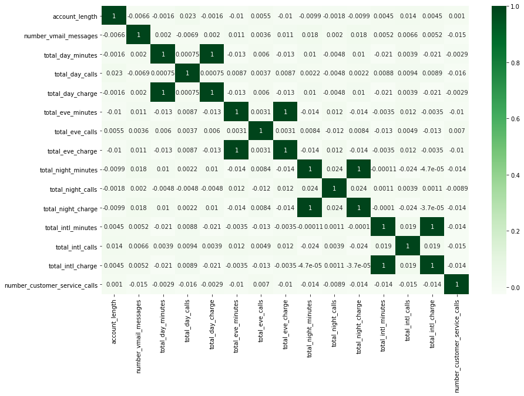
- total_%_charge와 total_%_minutes는 모두 연관성이 아주 강함 (상관계수 = 1)
- minute에 정확히 비례해서 charge가 결정되는 구조인 듯.
→ ‘total_%_charge’ 형태의 이름을 가진 컬럼은 삭제해줌
- total_%_charge는 total_%_minutes에 비례해서 결정되는 값이기에, 두 종류의 컬럼을 모두 살펴볼 필요는 없다고 판단됨.
customer_df.drop(['total_day_charge', 'total_eve_charge', 'total_night_charge', 'total_intl_charge'], axis='columns', inplace=True) customer_df.head()
| state | account_length | area_code | international_plan | voice_mail_plan | number_vmail_messages | total_day_minutes | total_day_calls | total_eve_minutes | total_eve_calls | total_night_minutes | total_night_calls | total_intl_minutes | total_intl_calls | number_customer_service_calls | churn | |
|---|---|---|---|---|---|---|---|---|---|---|---|---|---|---|---|---|
| 0 | OH | 107 | area_code_415 | no | yes | 26 | 161.6 | 123 | 195.5 | 103 | 254.4 | 103 | 13.7 | 3 | 1 | no |
| 1 | NJ | 137 | area_code_415 | no | no | 0 | 243.4 | 114 | 121.2 | 110 | 162.6 | 104 | 12.2 | 5 | 0 | no |
| 2 | OH | 84 | area_code_408 | yes | no | 0 | 299.4 | 71 | 61.9 | 88 | 196.9 | 89 | 6.6 | 7 | 2 | no |
| 3 | OK | 75 | area_code_415 | yes | no | 0 | 166.7 | 113 | 148.3 | 122 | 186.9 | 121 | 10.1 | 3 | 3 | no |
| 4 | MA | 121 | area_code_510 | no | yes | 24 | 218.2 | 88 | 348.5 | 108 | 212.6 | 118 | 7.5 | 7 | 3 | no |
chrun 여부 예측에 주요한 변수 파악
: Logitsic Regression으로 각 변수의 coefficient를 계산해, 어떤 변수가 churn 여부를 예측하는 데에 중요하게 작용하는지 파악
Logistic Regression 모델 계산
# scikit-learn을 사용
from sklearn.model_selection import train_test_split
from sklearn.linear_model import LogisticRegression
from sklearn import preprocessing
-
churn = yes / no를 1과 0으로 변환한 칼럼을 별도로 저장
customer_df['churn_0_1'] = customer_df['churn'].apply(lambda x: 1 if x == 'yes' else 0) customer_df[['churn', 'churn_0_1']].head()churn churn_0_1 0 no 0 1 no 0 2 no 0 3 no 0 4 no 0 -
입력변수(X), 목표변수(y)를 나누어 저장
X = customer_df.iloc[:, :-2] # ~ 'number_customer_service_calls' 컬럼까지 저장 y = customer_df.iloc[:, -1] # 'churn_0_1' 컬럼만 저장 -
카테고리 변수를 더미변수화
# 값이 3개 이상인 컬럼은 pd.get_dummies()로 더미변수화 X = pd.get_dummies(data=X, columns=['state', 'area_code']) # 값이 yes, no 2개인 컬럼: yes를 1, no를 0으로 변환 X['international_plan'] = X['international_plan'].apply(lambda x: 1 if x == 'yes' else 0) X['voice_mail_plan'] = X['voice_mail_plan'].apply(lambda x: 1 if x == 'yes' else 0) X.head()account_length international_plan voice_mail_plan number_vmail_messages total_day_minutes total_day_calls total_eve_minutes total_eve_calls total_night_minutes total_night_calls total_intl_minutes total_intl_calls number_customer_service_calls state_AK state_AL state_AR state_AZ state_CA state_CO state_CT state_DC state_DE state_FL state_GA state_HI state_IA state_ID state_IL state_IN state_KS state_KY state_LA state_MA state_MD state_ME state_MI state_MN state_MO state_MS state_MT state_NC state_ND state_NE state_NH state_NJ state_NM state_NV state_NY state_OH state_OK state_OR state_PA state_RI state_SC state_SD state_TN state_TX state_UT state_VA state_VT state_WA state_WI state_WV state_WY area_code_area_code_408 area_code_area_code_415 area_code_area_code_510 0 107 0 1 26 161.6 123 195.5 103 254.4 103 13.7 3 1 0 0 0 0 0 0 0 0 0 0 0 0 0 0 0 0 0 0 0 0 0 0 0 0 0 0 0 0 0 0 0 0 0 0 0 1 0 0 0 0 0 0 0 0 0 0 0 0 0 0 0 0 1 0 1 137 0 0 0 243.4 114 121.2 110 162.6 104 12.2 5 0 0 0 0 0 0 0 0 0 0 0 0 0 0 0 0 0 0 0 0 0 0 0 0 0 0 0 0 0 0 0 0 1 0 0 0 0 0 0 0 0 0 0 0 0 0 0 0 0 0 0 0 0 1 0 2 84 1 0 0 299.4 71 61.9 88 196.9 89 6.6 7 2 0 0 0 0 0 0 0 0 0 0 0 0 0 0 0 0 0 0 0 0 0 0 0 0 0 0 0 0 0 0 0 0 0 0 0 1 0 0 0 0 0 0 0 0 0 0 0 0 0 0 0 1 0 0 3 75 1 0 0 166.7 113 148.3 122 186.9 121 10.1 3 3 0 0 0 0 0 0 0 0 0 0 0 0 0 0 0 0 0 0 0 0 0 0 0 0 0 0 0 0 0 0 0 0 0 0 0 0 1 0 0 0 0 0 0 0 0 0 0 0 0 0 0 0 1 0 4 121 0 1 24 218.2 88 348.5 108 212.6 118 7.5 7 3 0 0 0 0 0 0 0 0 0 0 0 0 0 0 0 0 0 0 0 1 0 0 0 0 0 0 0 0 0 0 0 0 0 0 0 0 0 0 0 0 0 0 0 0 0 0 0 0 0 0 0 0 0 1 - 입력변수 표준화(standardization)
- ※ X값을 표준화해주지 않으면, 계산되는 coefficient를 동일선상에서 비교할 수 없음
scaler = preprocessing.StandardScaler() X_scaled = scaler.fit_transform(X) -
train_test_split & 학습
X_train, X_test, y_train, y_test = train_test_split(X_scaled, y, test_size=0.2) y_train = y_train.values.ravel() #ravel(): 다차원 array를 1차원 array로 평평하게 펴주는 함수.logistic_model = LogisticRegression(solver='saga', max_iter=2000, penalty='l1') logistic_model.fit(X_train, y_train) logistic_model.score(X_test, y_test) # accuracy_score0.8670588235294118
변수별 coefficient 비교
# df를 만들어 coefficient의 절대값이 큰 순서대로 정렬
temp = pd.DataFrame(list(zip(X.columns, np.absolute(logistic_model.coef_[0]))),
columns=['feature', 'coefficient']).sort_values('coefficient', ascending=False).reset_index()
# coefficient가 큰 Top 20 변수만 시각화
plt.figure(figsize=(8, 6))
sns.barplot(data=temp.head(20), y='feature', x='coefficient', palette='Greens_r');
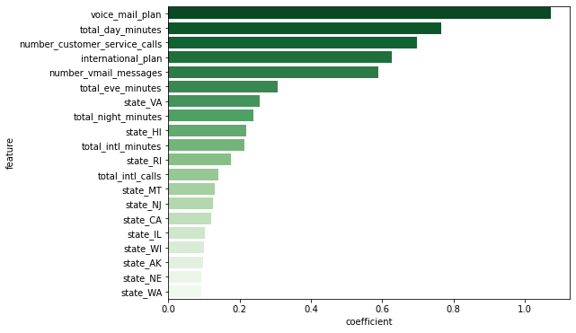
- voice_mail_plan, total_day_minutes, number_customer_service_calls, international_plan, number_vmail_messages가 고객 이탈 예측에 주요한 변수라고 판단됨
변수별 비교
주(state)별 이탈률
- 주별 이탈률 비교
# churn: yes=1, no=0인 상태에서 평균을 구하면 churn rate와 같다 churn_state = customer_df.groupby(['state'])[['churn_0_1']].mean() * 100 churn_state.rename(columns={'churn_0_1':'churn rate (%)'}, inplace=True) churn_state.reset_index(inplace=True) # 이탈률 기준 내림차순 정렬 churn_state.sort_values(by='churn rate (%)', ascending=False, inplace=True) churn_state.head()state churn rate (%) 31 NJ 27.0833 4 CA 25.641 47 WA 22.5 20 MD 22.093 26 MT 21.25 → 주별 이탈률 시각화해서 확인
plt.figure(figsize=(16, 6)) sns.barplot(data=churn_state, x='state', y='churn rate (%)', palette='Greens_r');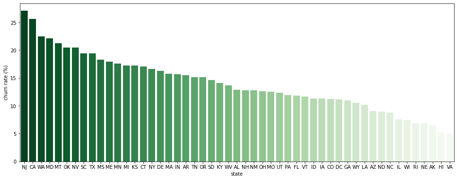
- NJ(New Jersey)와 CA(California)가 특히 churn rate이 높은 주로 판명됨
- VA(Virginia)와 HI(Hawaii)는 특히 churn rate이 낮은 주로 판명됨
- 주별 이탈자 수 비교
- ‘이탈률’이 높은 주가 실제 ‘이탈자 수’도 많은 것인지, 단순히 가입자 수가 적어서인지 확인하기 위함
state_churn_count = pd.pivot_table(data=customer_df, index='state', columns='churn', values='account_length', aggfunc='count').reset_index() state_churn_count.sort_values(by='yes', ascending=False, inplace=True) state_churn_count.head()state no yes 31 NJ 70 26 43 TX 79 19 23 MN 89 19 49 WV 120 19 20 MD 67 19 → 주별 이탈자 수 시각화해서 확인
plt.figure(figsize=(16, 6)) sns.barplot(data=state_churn_count, x='state', y='yes', palette='Greens_r');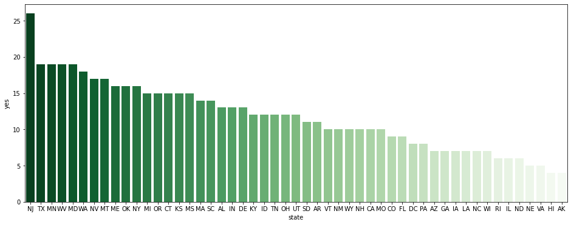
- NJ(New Jersey)는 실제로도 이탈자 수가 가장 많은 주로 판명됨. 특히 고객 경험 관리에 신경을 쓰면 좋은 주라고 생각.
- VA(Virginia)와 HI(Hawaii)는 실제로도 이탈자 수가 매우 적은 주로 판명됨.
plan별 이탈률
: voice_mail_plan, international_plan 고객 타입별 이탈률
-
voice_mail_plan 사용 여부에 따른 이탈률
# churn: yes=1, no=0인 상태에서 평균을 구하면 churn rate와 같다 sns.barplot(data=customer_df, x='voice_mail_plan', y='churn_0_1', palette='Greens');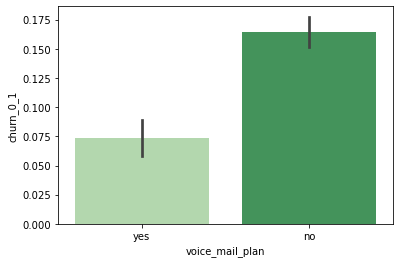
- voice_mail_plan을 사용하지 않는 고객의 이탈률을 약 16%, 사용하는 고객의 이탈률은 약 7%
→ 비율 차이가 유의미한지 t-test
(사실 비율은 결국 평균과 같은 개념이라고 할 수 있기에, 평균 차이처럼 t-test를 활용해도 괜찮다)temp1 = customer_df[customer_df['voice_mail_plan'] == 'yes'] temp2 = customer_df[customer_df['voice_mail_plan'] == 'no'] # Levene의 등분산 검정 lev_result = stats.levene(temp1['churn_0_1'], temp2['churn_0_1']) print('LeveneResult(F) : %.2f \np-value : %.3f' % (lev_result))LeveneResult(F) : 56.57 p-value : 0.000# 이분산인 독립표본 t-test 실행 t_result = stats.ttest_ind(temp1['churn_0_1'], temp2['churn_0_1'], equal_var=False) print('t statistic : %.2f \np-value : %.3f' % (t_result))t statistic : -8.84 p-value : 0.000- p < 0.01이고, 시각화해서 살펴봤을 때도 꽤 차이가 나므로, voice_mail_plan을 사용하지 않는 고객이 더 이탈률이 높다고 할 수 있음
-
international_plan 사용 여부에 따른 이탈률
sns.barplot(data=customer_df, x='international_plan', y='churn_0_1', palette='Greens');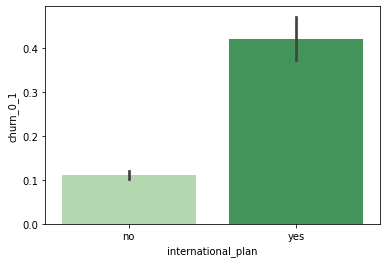
- international_plan을 사용하지 않는 고객의 이탈률을 약 11%, 사용하는 고객의 이탈률은 약 42%
→ 비율 차이가 유의미한지 t-test
temp1 = customer_df[customer_df['international_plan'] == 'yes'] temp2 = customer_df[customer_df['international_plan'] == 'no'] # Levene의 등분산 검정 lev_result = stats.levene(temp1['churn_0_1'], temp2['churn_0_1']) print('LeveneResult(F) : %.2f \np-value : %.3f' % (lev_result))LeveneResult(F) : 305.58 p-value : 0.000# 이분산인 독립표본 t-test 실행 t_result = stats.ttest_ind(temp1['churn_0_1'], temp2['churn_0_1'], equal_var=False) print('t statistic : %.2f \np-value : %.3f' % (t_result))t statistic : 12.22 p-value : 0.000- p < 0.01이고, 시각화해서 살펴봤을 때도 큰 차이가 나므로, international_plan을 사용하는 고객이 더 이탈률이 높다고 할 수 있음
- international_plan을 사용하는 고객의 이탈률은 42%나 되므로, 플랜의 불만족 요인을 전반적으로 점검해볼 필요가 있다고 생각됨.
낮 통화시간에 따른 이탈률
-
이탈 여부에 따른 total_day_minutes 분포 & 평균 비교
fig, (ax1, ax2) = plt.subplots(ncols=2, figsize=(10, 5)) sns.boxplot(data=customer_df, x='churn', y='total_day_minutes', palette='Greens', ax=ax1) sns.barplot(data=customer_df, x='churn', y='total_day_minutes', palette='Greens', ax=ax2) plt.close(2) plt.close(3) plt.tight_layout()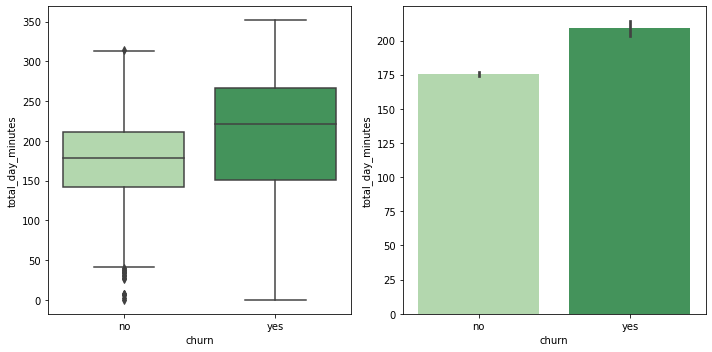
- 이탈한 고객들이 전반적으로 total_day_minutes가 높은 편으로 보임
-
total_day_minutes 4분위별 이탈률
# 사분위를 계산해서 칼럼을 새로 생성 temp_df = customer_df[['total_day_minutes', 'churn', 'churn_0_1']] q1, q2, q3 = np.percentile(temp_df['total_day_minutes'], [25, 50, 75]) def get_quarter(x): if x < q1: quarter = '1st_q' elif x < q2: quarter = '2nd_q' elif x < q3: quarter = '3rd_q' else: quarter = '4th_q' return quarter temp_df['total_day_minutes_quartile'] = temp_df['total_day_minutes'].apply(lambda x: get_quarter(x)) temp_df.head()total_day_minutes churn churn_0_1 total_day_minutes_quartile 0 161.6 no 0 2nd_q 1 243.4 no 0 4th_q 2 299.4 no 0 4th_q 3 166.7 no 0 2nd_q 4 218.2 no 0 4th_q → total_day_minutes 사분위별 churn rate 시각화해 비교
sns.barplot(data=temp_df, y='total_day_minutes_quartile', x='churn_0_1', order=['4th_q', '3rd_q', '2nd_q', '1st_q'], palette='Greens');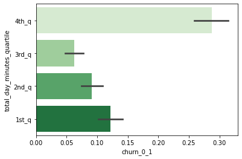
- 특히 total_day_minutes가 가장 많은 사분위에 속하는 고객들이 높은 이탈률을 보임.
customer service calls에 따른 이탈률
-
이탈 여부에 따른 number_customer_service_calls 분포 & 평균 비교
fig, (ax1, ax2) = plt.subplots(ncols=2, figsize=(10, 5)) sns.boxplot(data=customer_df, x='churn', y='number_customer_service_calls', palette='Greens', ax=ax1) sns.barplot(data=customer_df, x='churn', y='number_customer_service_calls', palette='Greens', ax=ax2) plt.close(2) plt.close(3) plt.tight_layout()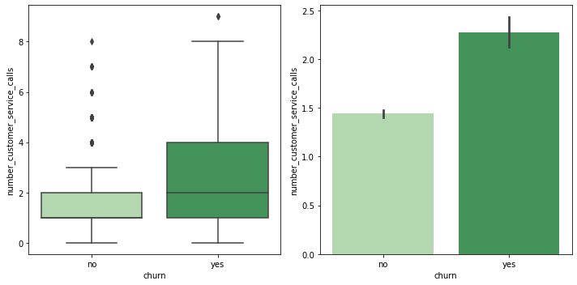
- 이탈한 고객들이 전반적으로 number_customer_service_calls가 많았던 것으로 보임
-
number_customer_service_calls별 이탈자와 비이탈자 분포
plt.figure(figsize=(8, 6)) sns.countplot(data=customer_df, x='number_customer_service_calls', hue='churn', palette='Greens_r');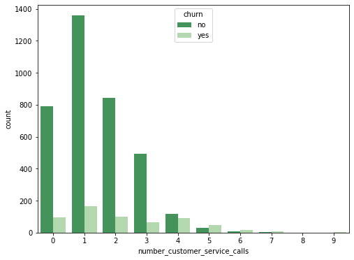
-
number_customer_service_calls 그룹별 이탈률
# 전화 횟수를 4번 이상 / 3번 이하로 나누어 flag를 붙임 temp_df = customer_df[['number_customer_service_calls', 'churn', 'churn_0_1']] temp_df['customer_service_calls_flag'] = temp_df['number_customer_service_calls'].apply(lambda x: 'more than 4' if x >= 4 else 'less than 3') # number_customer_service_calls 그룹별 churn rate 비교 sns.barplot(data=temp_df, y='customer_service_calls_flag', x='churn_0_1', palette='Greens');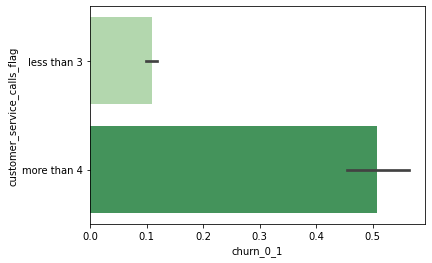
- customer service call을 4번 이상 한 고객의 50%가 이탈 → customer service call을 4번 이상 한 고객은 특별한 고객 경험 관리가 필요하다고 생각됨.
보이스메일 메시지 수에 따른 이탈률
-
이탈 여부에 따른 number_vmail_messages 분포 & 평균 비교
fig, (ax1, ax2) = plt.subplots(ncols=2, figsize=(10, 5)) sns.boxplot(data=customer_df, x='churn', y='number_vmail_messages', palette='Greens', ax=ax1) sns.barplot(data=customer_df, x='churn', y='number_vmail_messages', palette='Greens', ax=ax2) plt.close(2) plt.close(3) plt.tight_layout()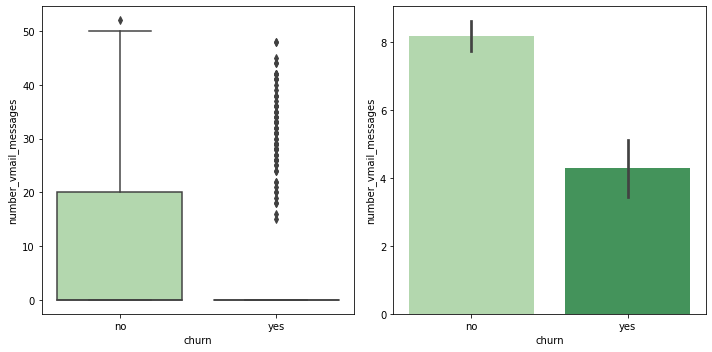
- 이탈한 고객 중 voice_mail_plan을 사용하지 않는 경우가 많아서 vmail_messages가 0인 경우가 많은 듯.
- ‘voice_mail_plan = no’인 경우를 제외하고 비교
- voice_mail_plan을 사용하지 않는 경우, vmail_messages가 0이기 때문
vmail_customer = customer_df[customer_df['voice_mail_plan'] == 'yes'] fig, (ax1, ax2) = plt.subplots(ncols=2, figsize=(10, 5)) sns.boxplot(data=vmail_customer, x='churn', y='number_vmail_messages', palette='Greens', ax=ax1) sns.barplot(data=vmail_customer, x='churn', y='number_vmail_messages', palette='Greens', ax=ax2) plt.close(2) plt.close(3) plt.tight_layout()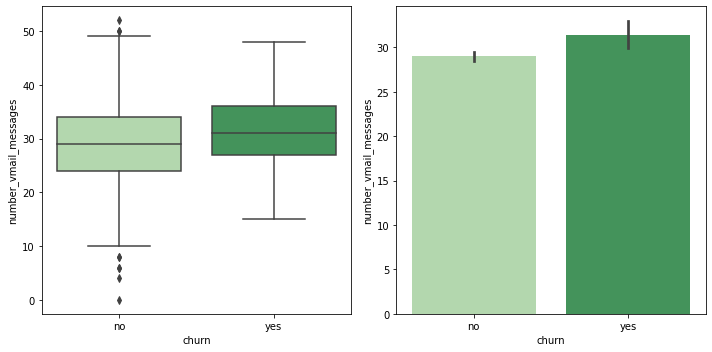
- voice_mail_plan을 사용한 고객만으로 비교하면, 이탈 여부에 따라 number_vmail_messages가 크게 달라지지는 않는 것으로 확인됨.
- number_vmail_messages별 이탈자와 비이탈자 분포
- number_vmail_messsages = 0인 경우는 제외하고 시각화 (0인 경우가 압도적으로 많아서)
plt.figure(figsize=(15, 6)) sns.countplot(data=customer_df[customer_df['number_vmail_messages'] != 0], x='number_vmail_messages', hue='churn', palette='Greens_r');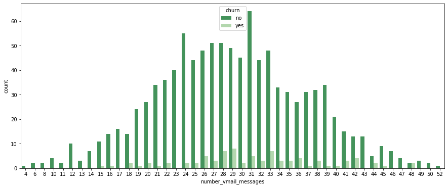
-
number_vmail_messages별 이탈률 비교
plt.figure(figsize=(15, 6)) sns.barplot(data=customer_df, x='number_vmail_messages', y ='churn_0_1', palette='Greens_r', ci=None);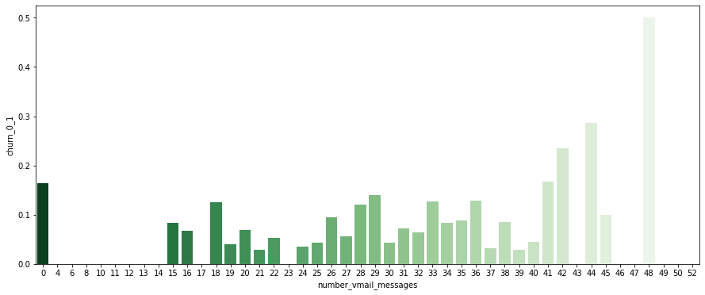
- number_vmail_messages = 0인 경우를 제외하면, number_vmail_messages가 낮다고 이탈자가 많은 것은 아님
- number_vmail_messages만 가지고는 이탈할 고객인지 판별하기 어려울 듯